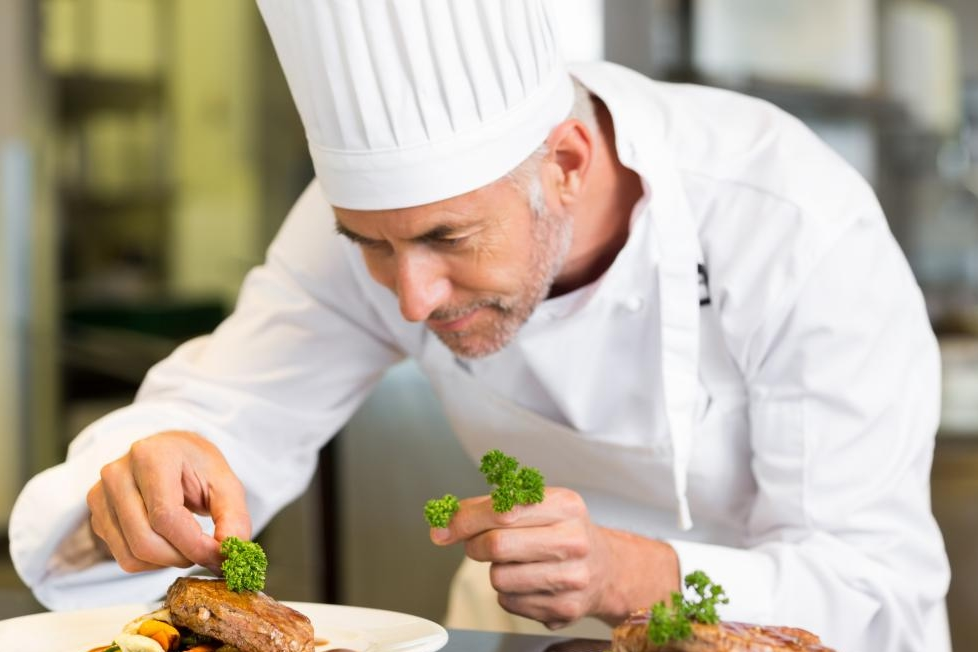
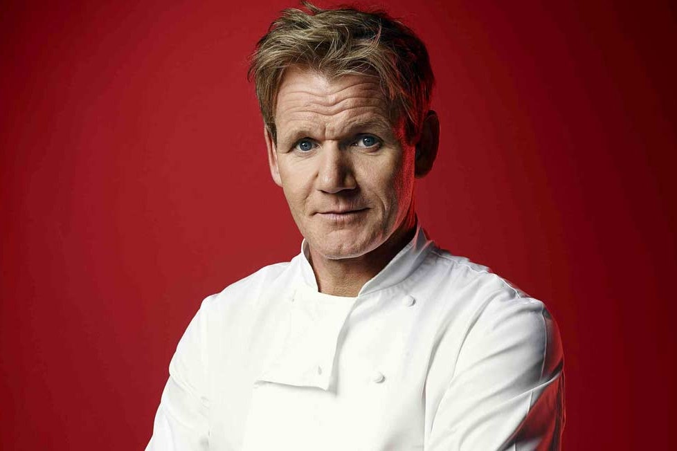
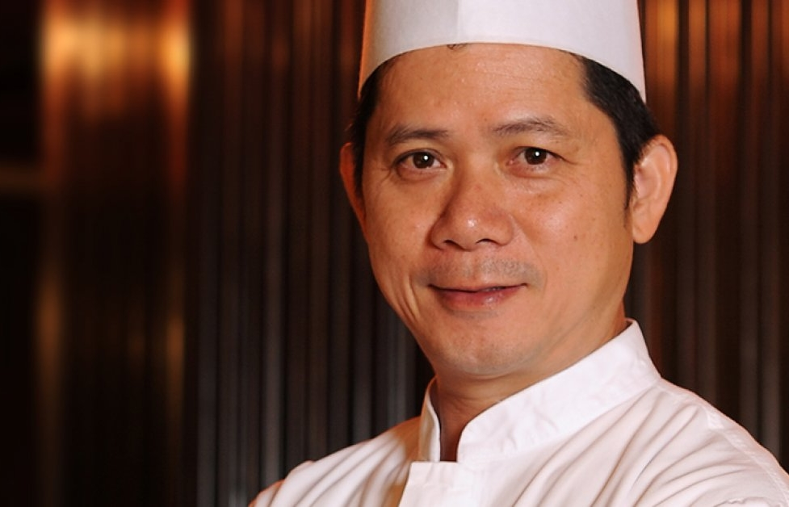

Brigade
Lutder V. Cronin
Lutder V. Cronin est le propriétaire d'une chaine de restaurants de poulet frit, Los Pollos Hermanos, située dans le Sud-Ouest des États-Unis, avec son restaurant phare à Albuquerque, de même que l'élevage de poulet et le centre de distribution de l'entreprise en périphérie de la ville.
La franchise est une filiale de Madrigal Electromotive GmbH, une société multinationale dont le siège social est en Allemagne et qui détient des participations dans plusieurs filiales.

Márton Vidor
Márton Vidor, né le 8 novembre 19661 à Johnstone en Écosse, est un chef cuisinier et restaurateur britannique.
Également présentateur de plusieurs émissions télévisées consacrées à la cuisine ou à la restauration, telles que The F Word, MasterChef, ou encore la célèbre émission Vidor's Kitchen Nightmares (diffusée en France sous le nom de Cauchemar en cuisine), il compte parmi les trois cuisiniers ayant été gratifiés de trois étoiles en une fois par l'édition britannique du Guide Michelin.
En 2006, il est fait membre de l'Ordre de l'Empire britannique.

Lee Chi Ho (李志豪)
Lee Chi Ho, dès son enfance, s'est intéressé à la cuisine, intérêt qu'il partage avec son père Jôichirô Yukihira. Ainsi, Lee Chi Ho n'avait que trois ans, lorsqu'il commença pour la première fois à travailler avec son père dans le restaurant familial, le Yukihira. Lee Chi Ho fut, très vite, capable de cuisiner seul certains plats familiaux, et ce, alors qu'il n'était qu'en maternelle. Il travailla même dans la cantine de sa maternelle, surprenant ainsi les divers chefs travaillant avec lui.
Entre et grâce à ces diverses expériences, Lee Chi Ho n'hésita pas à défier son père dans des combats culinaires. Malgré les défaites enchaînées, il continua à s'entraîner et à s'améliorer afin de pouvoir vaincre son père.
